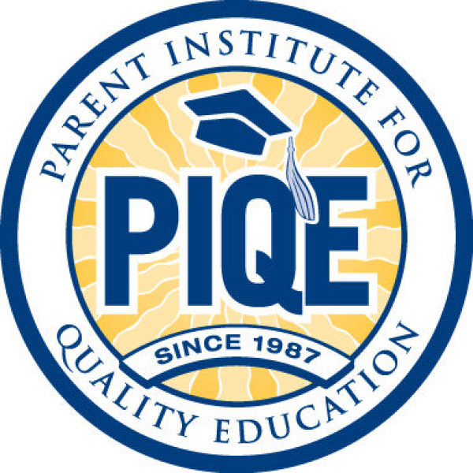
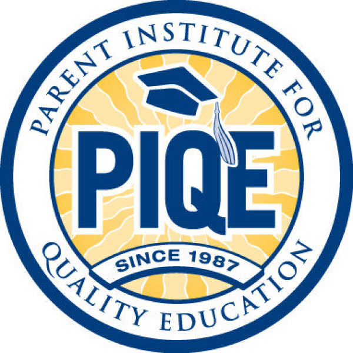
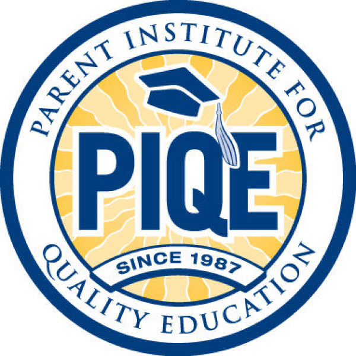

Diana Aguirre Rogel
I was born in Moorpark in Ventura County. I have always lived in and gone to school in Moorpark. I am a graduate from Moorpark Community College with an associates in Psychology and currently attending UC Riverside working on my Psychology B.A. Although I don’t have a clear direction of what I want to do in the field, I would like to be able to help people and provide them with the resources they need for their well-being.
I have volunteered in my community in the PIQE (Parent Institute for Quality Education) to help engage and transform families by being able to provide the knowledge and the skills to ensure their children achieve full potential. It was nice to volunteer in this program because most of the time it’s families with different socio-economic and cultural backgrounds. Which works to apply my skills of communicating effectively and fluently speaking and writing in Spanish to be able to give feedback to parents about their child’s progress. Being bilingual came into play a lot when I worked at Kohl’s, being able to guide and help customers. I was a team leader in charge of making sure customers' orders got packaged and shipped. As well as making sure the stockroom was in order and packed. I worked at a small cafe, taking orders and making sure their food got delivered to their tables.
In my personal time, I like to play games, more specifically on my PC. Some games I enjoy are Overwatch and Valorant. I am also very into music as I play the ukulele and currently training myself on the electric guitar. I am also a mom, a cat mom. He is a 4 year old Maine Coon cat named Neptune. Family is very important to me, as I was raised in a traditional Mexican household. It is important I celebrate holidays and remember my roots.
Experience
Season Employee
• Stocked merchandise
• Packaged and shipped orders
• In charge of morning and BOPUS orders
Elemetary School Tutor
• Helped students out with their homework
• Supervised children during recess
• Interacted with parents about their child's progress
Education
UC Riverside
Moorpark College
Portfolio
 

